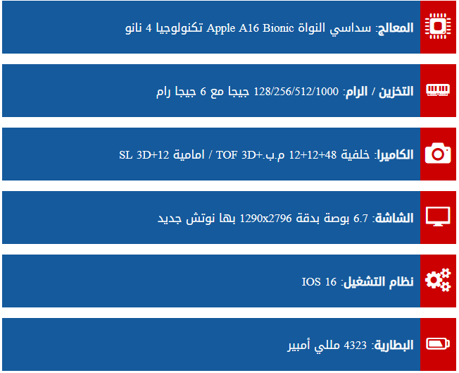
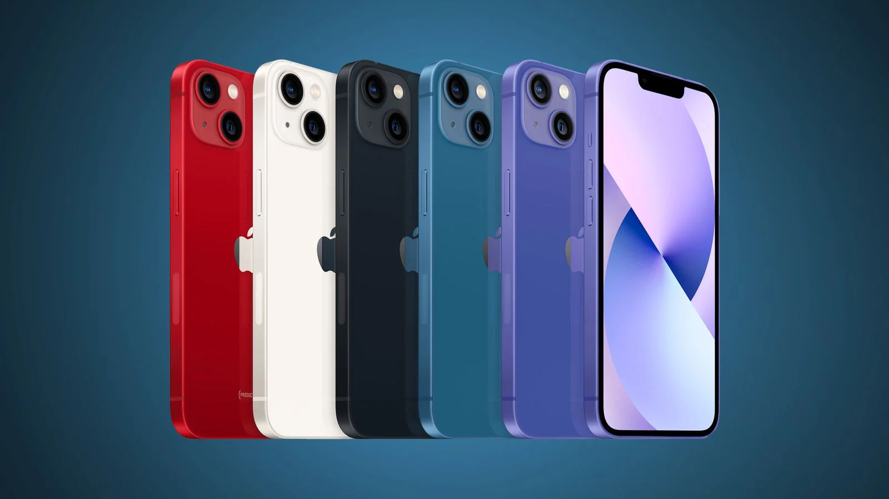
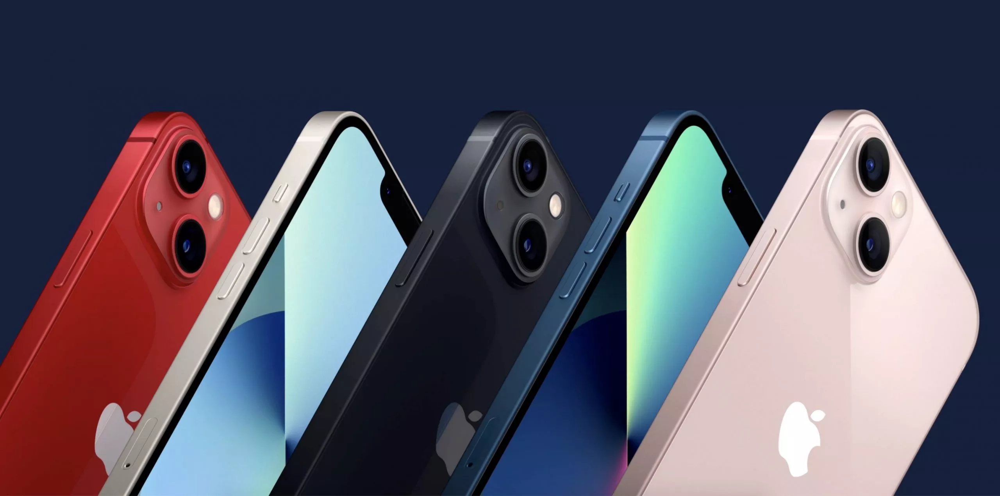

iphon14مواصفات هاتف
ios



- nfc يدعم الهاتف خاصية
- يأتي الهاتف بأبعاد 160.7×77.6×7.85 ملم مع وزن 240 جرام
- 5G,4G,3G,2G يدعم شبكة الاتصال الجيل الثي و الثالث والرابع والخميس
- يأتي الهاتف مقاوم للماء والغبار بشهادة - ip68-اللمقاوم للماء حتى 6 متر لمدة نصف ساعة
- بمساحة 6.1 إنش بدقة 1170×2532 بكسل مع معدل كثافة بكسلات بمعدل 460 بكسل لكل إنش بالإضافة إلى طبقة مقاومة الخدش كما يدعم خاص ومعدل تحديث 60 هيرتز مع أقصى سطوع للشاشة 1200 شمعة Super Retina XDR .الشاشة تأتي بشكل النوتش القديم في منتصف الشاشة حيث- ة .
- يتوفر الهاتف بأكثر من إصدار من الذاكرة الصلبة والذاكرة العشوائية على النحو التالي
مع ذاكرة عشوائية بسعة 6 جيجا بايت nvme الإصدار الأول يأتي بذاكرة صلبة بسعة 128 جيجا بايت من نوع
مع ذاكرة عشوائية بسعة 6 جيجا بايت . NVMe الإصدار الثاني يأتي بذاكرة صلبة بسعة 256 جيجا بايت من نوع
مع ذاكرة عشوائية بسعة 6 جيجا بايت .
– للأسف لا يدعم الهاتف إمكانية زيادة المساحة التخزينية عن طريق تركيب كارت ميموري . NVMe الإصدار الثالث يأتي بذاكرة صلبة بسعة 512 جيجا بايت من نوع
- فهو نفس المعالج القديم الذي يأتي في هواتف الايفون 13 السابقة . Apple GPU 5-core graphics بتكنولوجيا الـ 5 نانو مع معالج رسومي A15 Bionic أما عن الأداء فالهاتف يأتي بمعالج سداسي النواة من شركة ابل من نوع
- Face ID وتدعم الاوتوفوكس , كما يوجد عدسة ثانية لل F/1.9 الكاميرا الأمامية تأتي بدقة 12 ميجا بكسل بفتحة عدسة
- F/1.5 الكاميرا الخلفية تأتي بكاميرا مزدوجة حيث تأتي الكاميرا الأولى بدقة 12 ميجا بكسل بفتحة عدسة
وهي الكاميرا الخاصة بالتصوير الواسع بالإضافة إلى فلاش أحادي من نوع ليد فلاش .F/2.4 ما عن الكاميرا الثانية فتأتي بدقة 12 ميجا بكسل بفتحة عدسة ois وهي الكاميرا الأساسية وتدعم المثبت البصري الـ
- 4kدعم الهاتف تصوير الفيديوهات بجودة
بمعدل التقاط 24 و25 و30 و60 إطار في الثانية الواحدة
FBS 25 و30 و60 و120 و240 1080FHDكما يدعم التصوير بجودة
- يدعم ميكروفون إضافي لعزل الضوضاء
- host Dual-bandكما يدعم a/b/g/n/ac/6 الواي فاي يأتي بترددات ال
- A2DP,LEالبلوتوث يأتي بإصدار 5.3 مع دعمه لخاصيتي
- A-GPS, GLONASS, GALILEO, BDS, QZSS .يدعم الهاتف تحديد الموقع الجغرافي الـ GPS كما يدعم أنظمة الملاحة الأخرى مثل ال
- وسائل الأمان والحماية : يدعم الهاتف بصمة الوجه
- a/b/g/n/ac/6 كما يدعم الـ Dual-band, hotspot .الواي فاي يأتي بترددات الـ
- كما يدعم الهاتف معظم المستشعرات الأخرى مثل التسارع والقرب والبوصلة والجيروسكوب والضغط الجوي
- السماعات الخارجية تأتي بصوت ستيريو لتحصل على صوت أفضل نسبياً .
- البطارية بحجم 3279 مللي أمبير و تدعم الشحن السريع بقوة 20 واط والشحن اللاسلكي
MagSafe بقوة 15 واط والشحن
- ios 15يأتي الهاتف بنظام تشغيل
- توفر الهاتف باللون الاحمر وباللون الأزرق وباللون الأبيض وباللون الوردي وباللون الأسود
iphon14 pro max مميزات
- 5Gيدعم الهاتف شبكات الاتصال الـ
- الهاتف مقاوم للماء والغبار بشهادة
مع خامات محترمة من أبل ip68
- دعم طويل ومستمر لفترة طويلة من أبل .
- السماعات الخارجية تأتي بصوت ستريو عالي ومحترم
- كاميرات مميزة كما هو معتاد من شركة ابل سواء في الصور أو الفيديوهات .. فلقد تم تطوير التصوير الليلي وتم تطوير السيلفي .
- الجديد A16 bionic المعالج يقدم أداء جيد جدا والمعالج الرسومي ممتاز ولكن كنا نتمنى أن يتم إستخدام معالج ال
- تقدم تجربة جيدة من نوعها من حيث السطوع ودرجة تشبع الألوان مع دقة جيدة supr Retina XDR شاشة

iphon14 pro max عيوب
- 120hz-90hz لا وجود لمعدل تحديث الشاشة ال
- لا يدعم الهاتف منفذ الـ 3.5 ملم الخاص بسماعات الاذن مثل كل الهواتف الرائدة .
- ستحتاج إلى شراء رأس الشاحن بشكل منفصل .. لأن علبة الهاتف لا تحتوي الا على الهاتف و وصلة شحن
- - السابق .. فلقد تم تطوير الكاميرا الخلفية بفرق بسيط لتحصل على تصوير ليلي أفضل , تم تطوير السيلفي أيضا واضافة اوتوفوكس .. تم استخدام معالج رسومي iphon13 لا يقدم تغيير جذري بالمقارنة مع
- type c قديم ولم يتم استخدام Lighting منفذ
- فقطeSIM غير مدعومة في مصر حاليا .. فالاصدار الامريكي من الهاتف لن يعمل في مصر لأنه eSIM شريحة
- ميزة اتصال الطوارىء بالـ ستالايت تعمل في أمريكا وكندا فقط .. فلن تستطيع الاستفاده منها في مصر والوطن العربي